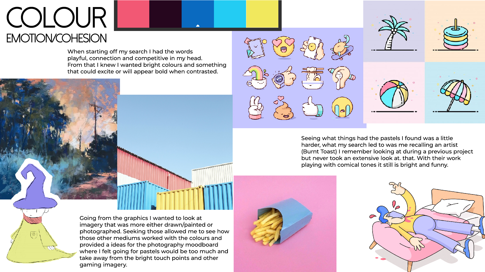
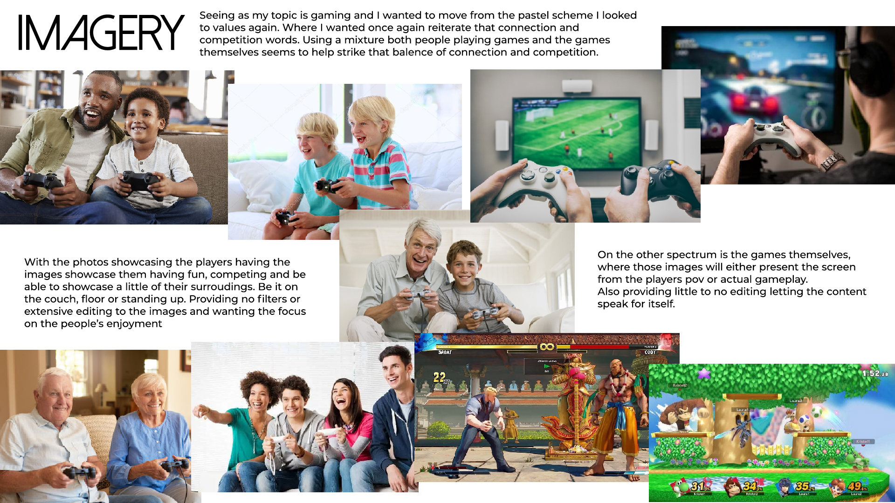
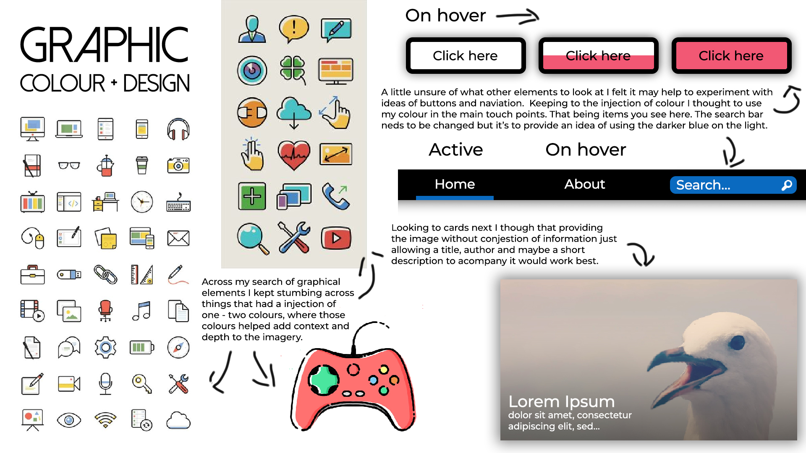
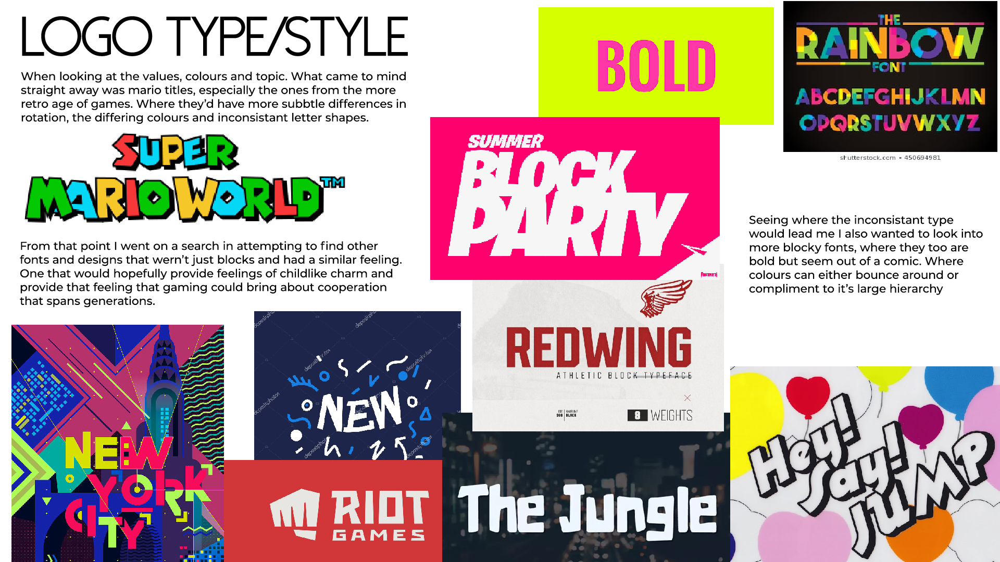

Updated moodboards
   
Gaming, a somewhat broad topic spanning technologies and generations. What I want to showcase and present are the bonds that can be created from even something as simple as a few rounds of a fighting game. With that bond being able to span different generations from just a quick sit down and play game of smash brothers.
Starting this off is a recommendation from Simon, twitch.tv a staple in streaming games. As I open the website I’m suggested a number of different live streams looking to give both large and small communities a showcase. What catches my eye next is the number of recommended live channels and games. Each of them provides a thumbnail to the stream, title and streamer/game. Apart from that, the navigation bar is what I see last with different services the user can do along the top and more recommended channels on the left which the user can expand to get more context to the stream. When hovering over a stream there’s 3D effect giving the focus more depth and is reminiscent of the 3d chat bubble logo (Glitch).
One other thing about twitch that was brought to my attention was their brand revival at https://brand.twitch.tv/. As soon as you enter the page you are given the theme of twitch’s rebrand that being the community, from the chat like movement of text to the numerous emotes throughout the twitch brand. To me, that provides a sense that we’ve had a part in twitch’s identity which is a nice feeling. As you continue to scroll you are greeted by the full logo and the message “ We rebranded Twitch with one single purpose. Not to rebuild, but to lift up and celebrate every member of our community.” Which further reiterates the claim I made before. As you continue to go through the page you get a pretty good impression of what twitch’s brand is. That it is nothing without its community of streamers and viewers. Building the inspiration for the rebrand and how this page is littered to references. Like the typeface name or the flappy bird styled game. Finally to this twitch rebrand is their guidelines, going through it you see the usual stuff in the guidelines but reading though the text helps you get a sense of their more casual tones which from a gaming service you feel is a staple, and it’s a nice detail to see and helps you connect a little more with twitch as a brand since it gives them a little more personality.
From here we’ve got a more editorial resource, polygon.com a large news outlet for entertainment and games. Opening the website I'm greeted with the headline article, which then leads me to the article to it's right with the opening having an interesting clipped corner on the top right. After that, I see the colourful navbar, which has quite an interesting gradient to it and has multiple categories. From there I want to scroll down the list and see what cards catch my eye. Something of interest is the difference in card sizes then lists which help mix and break up content. When clicking on an article the title and thumbnail all stand out, as you still down again content is differed by the alternating content blocks images to help provide context. The one ad of note is the one spitting the headline and navbar which isn't too pleasant but apart from that they don't seem too intrusive, either looking to be apart of the content blocks or along the sidebar.
When looking for their branding information I kept stumbling into the creator of the logo Cory Schmitz. I did find a page on their process through on vox media, from the start with logo designs, layout tests and typography choices to list a few things. The link is here if you are curious: An inside peek into the Polygon design process. Seeing this page though helps give me a better idea to web development in general and that it's a long and hard process. But seeing the development throughout looks satisfying, seeing what elements stuck and what things could be applied to other projects and forms. Considering it know it’s eerily similar to what I’m attempting now. They often call back to the words “People. Play. Games” and talking of the people both playing and behind the games. Which is one of the things I hoped to do with “CO-OP” with both connection and competitiveness, so from this point on it may be smart to refer back to this document and see how they’ve applied things like their typography and linked their branding throughout their resources.
Finally, we’ve got mixer.com a “competitor” to twitch in the streaming department. Once I open the page straight out the gate my eye is drawn the their “sign up” call to action. Being one of the brighter and almost the largest element to their page, that to me provides a more of a negative impression to it all. From there I see the featured streams in the middle and as you click between them all as they don’t have animation or delay it’s a little distracting. From there I’m drawn further down to see what content the present, which is the same as twitch being games and streamers but what is a nice element is the “Up and Coming” section which allows small streams to have a bit of the limelight. As you continue to scroll down they’ve got an infinite scroll going in a normal grid. As you hover over one of the streams there’s a simple colour change but after seeing how twitch handled their’s it leaves a little to be desired. Something of note though to me is the background, being a similar x to the one in the logo but it looks like it’s got artifacts and pixelated slightly on the display I’m using which doesn’t help them but that’s something not too many people would really notice. That and the random gradients on certain buttons and dialogue bars seems random compared to the rest of the website.
In regards to branding, I could find all I was able to see was a Github page which had logos and a few rules to their guidelines. Such as what can the logo be used for and what it can’t be used for. But apart from that, I can’t find much at all about their values just a little paragraph talking about their previous name and origin. But even then it seems lacking in other departments with personality and character while twitch appeared to pride itself on its culture and personality. Looking across the 3 resources I feel I can understand what works and doesn’t work a little better, as the brand I’m creating I want to have a little personality and encourage cooperation. Focusing on the people and the bonds that can be created out of something as simple as a few rounds in a fighting game.